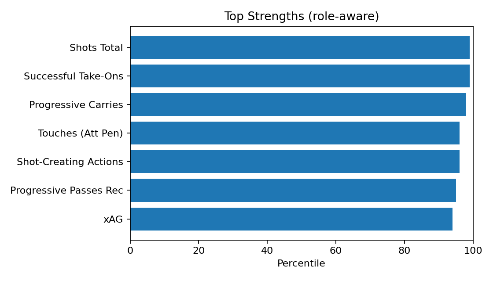
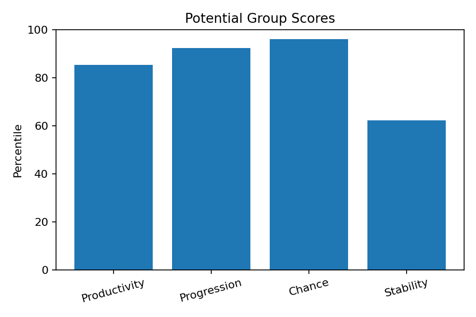
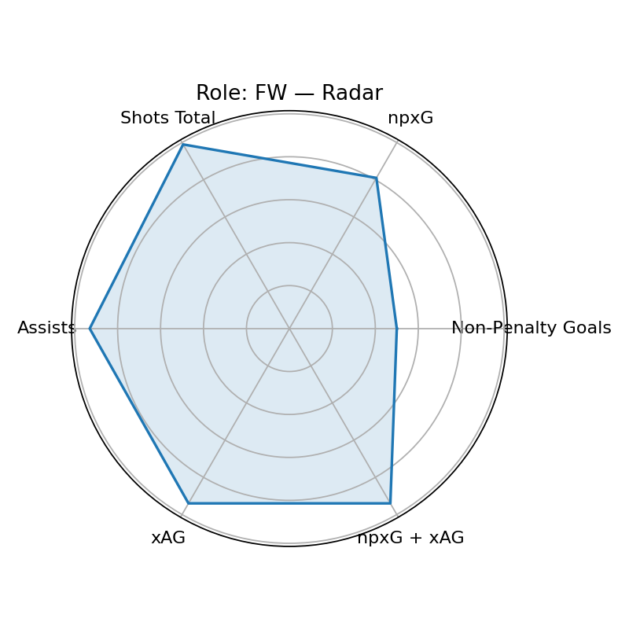

Scout Visual — Lamine Yamal
Player ID: 82ec26c1 · Role: FW · Minutes: 3448 · Age: 18
Current: None (base None, rel None, age None)
Potential: 93.2 — Groups: 85.2/92.4/96.0/62.3
Top Strengths

Weaknesses

Potential Groups

Role/Style Radar

Playstyle Engine
Primary: Traditional Winger (96.7)
Top-3: Traditional Winger(96.7), Inverted Winger(93.5), False Nine(89.7)
근거: Successful Take-Ons 상위 99퍼센(강점) · Progressive Carries 상위 98퍼센(강점) · Shot-Creating Actions 상위 96퍼센(강점) · Assists 상위 93퍼센(강점) · Passes Attempted 상위 88퍼센(강점) · Touches (Att Pen) 상위 96퍼센(강점)
개선: 핵심 보완 포인트 없음(상대적 우수)
Wikipedia-derived Qualitative
Qual Score: 94.0
injury=0, discipline=2,
transfer=0, char+= 0,
char-= 0, recent_w=1.0
Wikipedia: https://en.wikipedia.org/wiki/Lamine%20Yamal
Bias Diagnostics
Mode: v3
Diversity: 0.92
Imbalance penalty: 6.7
Uncertainty penalty: 0.8
Age gain: 10.0
Narrative — Current
[현재력] 역할=FW, 최종점수=89.1 / 강점: Shots Total(99p), Successful Take-Ons(99p), Progressive Carries(98p), Touches (Att Pen)(96p), Shot-Creating Actions(96p) / 기초=81.9, 출전보정=3.0, 나이표시=8.0
Narrative — Potential
[잠재력 v3] 역할=FW, 잠재점수=93.2 / 그룹: 생산85/전진92/찬스96/안정62 / 엘리트95+ 34, 99+ 12, 다양성=0.92 / 불확실성패널티=0.8, 불균형패널티=6.7, 나이이득=10.0
Coaching — Style-specific
- Successful Take-Ons 유지+응용: 역압박 상황 전개/선택지 추가 / 주 1회(클립 5개)
- Progressive Carries 유지+응용: 역압박 상황 전개/선택지 추가 / 주 1회(클립 5개)
- Shot-Creating Actions 유지+응용: 역압박 상황 전개/선택지 추가 / 주 1회(클립 5개)
- Assists 유지+응용: 역압박 상황 전개/선택지 추가 / 주 1회(클립 5개)
- Passes Attempted 유지+응용: 역압박 상황 전개/선택지 추가 / 주 1회(클립 5개)
- Touches (Att Pen) 유지+응용: 역압박 상황 전개/선택지 추가 / 주 1회(클립 5개)
Growth Roadmap — Phased
- · 0~6주: 기술 스킬 볼륨 확장(주 3세션) / 파이널 서드 의사결정 트리 15분 / 크로스 3종 30회×3세트(드리븐/칠드/컷백) / 오버랩 타이밍 시그널 합
- · 6~12주: 하프스페이스-와이드 전환 템포 조절 / 크로스 사전 스캔(수신자 수·거리)
- · 12주+: 온타깃 크로스 KPI 달성(경기당 2+) / Successful Take-Ons: 99→85 퍼센 상향 / Progressive Carries: 98→85 퍼센 상향